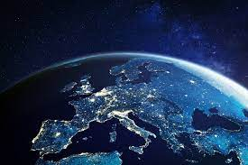

|  | Europa es un continente ubicado enteramente en el hemisferio norte y mayoritariamente en el hemisferio oriental. Las fronteras de Europa están situadas en la mitad occidental del hemisferio norte, limitada por el océano Ártico en el norte, hasta el mar Mediterráneo por el sur. Por el oeste, llega hasta el océano Atlántico. Por el este, limita con Asia, de la que la separan los montes Urales, el río Ural, el mar Caspio, la cordillera del Cáucaso, el mar Negro y los estrechos del Bósforo y de los Dardanelos.2 Europa es uno de los continentes que conforman el supercontinente euroasiático, situado entre los paralelos 35° 30’ y 70° 30’ de latitud norte.3 |
Europa es el segundo continente más pequeño en términos de superficie. Abarca 10 530 751 km² o el 2 % de la superficie del mundo y alrededor de 6,8 % del total de las tierras emergidas. Alberga un gran número de estados soberanos, algo más de 50, cuyo número exacto depende de la definición de la frontera de Europa, así como de la exclusión o inclusión de estados parcialmente reconocidos. De todos los países europeos, Rusia es el mayor en superficie (al mismo tiempo que es el estado soberano reconocido internacionalmente más extenso del mundo), mientras que la Ciudad del Vaticano es el más pequeño (al mismo tiempo que es el estado soberano e internacionalmente reconocido más pequeño del mundo). Europa es el cuarto continente más poblado después de Asia, África y América, con una población de 740 813 959 (año 2015) o alrededor del 10,03 % de la población mundial.4 Europa, en particular la Antigua Grecia, es la cuna de la cultura occidental. La caída del Imperio romano de Occidente, durante el período de la migración, marcó el fin de la Edad Antigua y el comienzo de una era conocida como la Edad Media. El Renacimiento con sus consiguientes humanismo, arte y ciencia, además de la exploración llevaron al "viejo continente", y finalmente al resto del mundo, a la Edad Moderna. A partir de este período las naciones europeas desempeñan un papel preponderante en los asuntos mundiales, desde el siglo xvi en adelante especialmente, después del comienzo de la colonización. En los siglos xvii y xviii, las naciones europeas controlaron la mayor parte de África, América, y gran parte de Asia, y posteriormente también Oceanía. La Revolución Industrial, que comenzó en el Reino Unido en el siglo xviii, dio lugar a un cambio radical en los ámbitos económico, tecnológico, cultural y social en Europa Occidental, que impactó en el resto del mundo. La Primera Guerra Mundial y la Segunda Guerra Mundial condujeron a una disminución en el dominio de Europa en los asuntos mundiales cuando los Estados Unidos y la Unión Soviética tomaron la preeminencia. La Guerra Fría entre las dos superpotencias dividió Europa a lo largo del Telón de Acero. La integración europea dio lugar a la formación del Consejo de Europa y la Unión Europea en Europa occidental, las cuales se han expandido hacia el este desde la disolución de la Unión Soviética en 1991. Actualmente, naciones que ejercen poder hegemónico mundial como Estados Unidos son el resultado de la colonización europea. |
|